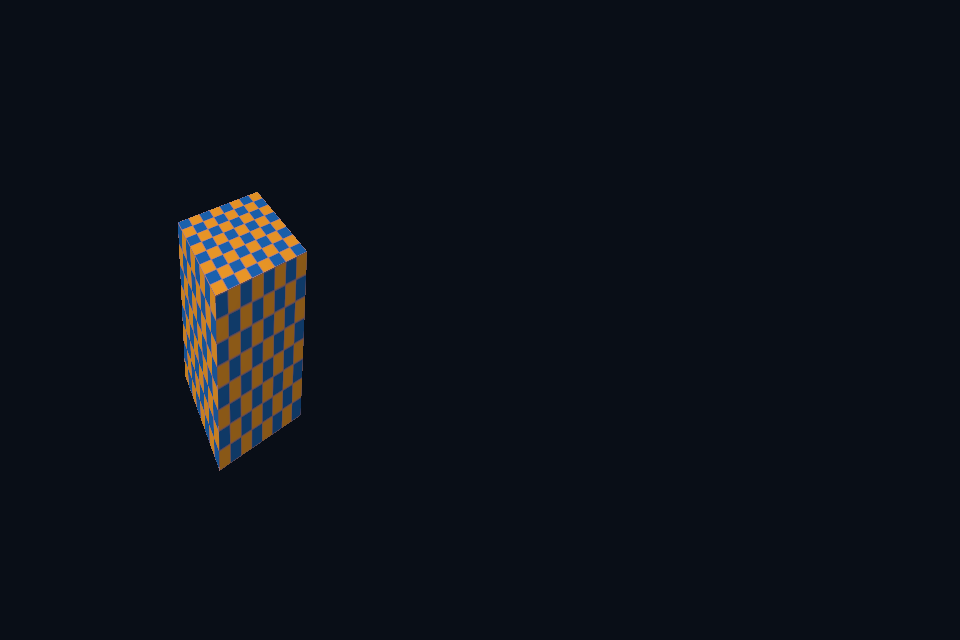

vk49_viewport_mapping · 视口映射
54 课目录
目的与实际执行
分别运行 half-scissor、half-viewport、back-face culling 和 red-only 写掩码实验。viewport/scissor 是管线声明的 dynamic state，cull 与写掩码在本实现中仍是创建时配置。投影 Y 翻转也会影响屏幕绕序判断。 本实验共用外表面逆时针模型：Vulkan 使用 COUNTER_CLOCKWISE，DX12 显式设置 FrontCounterClockwise=TRUE；不可依赖两边零初始化得到同一正面。
本程序有独立实验选择与验证路径，公共实现集中在 advanced_labs.cpp。设备/API 检查、数值 compute 与图形渲染采用不同证据；不是每个程序都会弹出窗口。
构建和运行
cmake --preset vulkan-native
cmake --build --preset vulkan-native-debug --target vk49_viewport_mapping --parallel 4
.\Vulkan\native\build\bin\Debug\vk49_viewport_mapping.exe
深入学习：数据、接口与执行
本课的真实源码切片
来自 Vulkan/common/scene_vk.hpp，第 408—451 行；这是现有实现的局部摘录，末尾可能处于函数中间，不是可单独编译的完整程序。
}
// 这里只录制绘制指令；外层调用者负责开始/结束渲染、附件布局和提交同步。
void render(VkCommandBuffer cmd, VkExtent2D size, float time, float roughnessScale = 1) {
auto f = overrideFrame.value_or(frame(mode, float(size.width) / size.height, true));
if (frameProvider)
f = frameProvider(float(size.width) / size.height, time, true);
uniform.upload(&f, sizeof(f));
VkViewport viewport{
0, 0, float(size.width) / (halfViewport ? 2 : 1), float(size.height), 0, 1};
VkRect2D scissor{{0, 0}, size};
if (halfScissor)
scissor.extent.width /= 2;
vkCmdSetViewport(cmd, 0, 1, &viewport);
vkCmdSetScissor(cmd, 0, 1, &scissor);
vkCmdBindPipeline(cmd, VK_PIPELINE_BIND_POINT_GRAPHICS, pipeline);
vkCmdBindDescriptorSets(
cmd, VK_PIPELINE_BIND_POINT_GRAPHICS, pipelineLayout, 0, 1, &descriptor, 0, nullptr);
if (mode >= 4) {
VkBuffer vb = overrideVertices ? overrideVertices : vertices.buffer;
VkDeviceSize offset = 0;
vkCmdBindVertexBuffers(cmd, 0, 1, &vb, &offset);
if (indices.buffer)
vkCmdBindIndexBuffer(cmd, indices.buffer, 0, VK_INDEX_TYPE_UINT32);
}
for (auto d : overrideDraws.empty() ? draws(mode, time) : overrideDraws) {
d.settings.z = std::clamp(d.settings.z * roughnessScale, .045f, 1.f);
vkCmdPushConstants(cmd,
pipelineLayout,
VK_SHADER_STAGE_VERTEX_BIT | VK_SHADER_STAGE_FRAGMENT_BIT,
0,
sizeof(d),
&d);
if (indirectArguments)
vkCmdDrawIndirect(cmd, indirectArguments, 0, 1, sizeof(VkDrawIndirectCommand));
else if (mode == 3)
vkCmdDraw(cmd, 3, 1, 0, 0);
else if (mode == 4)
vkCmdDraw(cmd, uint32_t(mesh.vertices.size()), 1, 0, 0);
else
vkCmdDrawIndexed(cmd, uint32_t(mesh.indices.size()), mode == 7 ? 25 : 1, 0, 0, 0);
}
}
~SceneVk() {
同主题跨 API 导航
先预测，再验证
先预测半视口与半裁剪的区别，再分别运行对应实验，检查模型宽高和可见区域。
参考推导：半视口把整幅几何压进较窄映射，半裁剪保留原映射但屏蔽右侧。它们可能显示相同面积，却不是相同几何变换。
验证与边界
运行 --smoke 执行有限自动检查。数值实验读取实际 GPU 结果，图形实验检查非空图像并可查看读回。交互重建与性能还需额外证据；窗口 renderer 当前保留串行等待，双槽计算实验不会被描述为完整多帧呈现引擎。
实际画面
